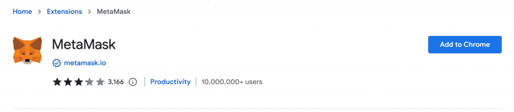
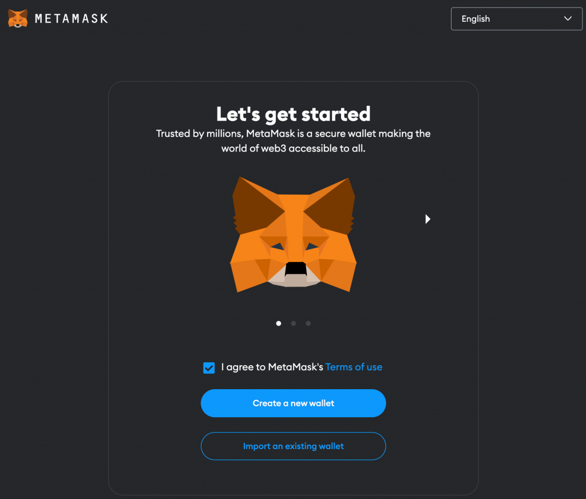
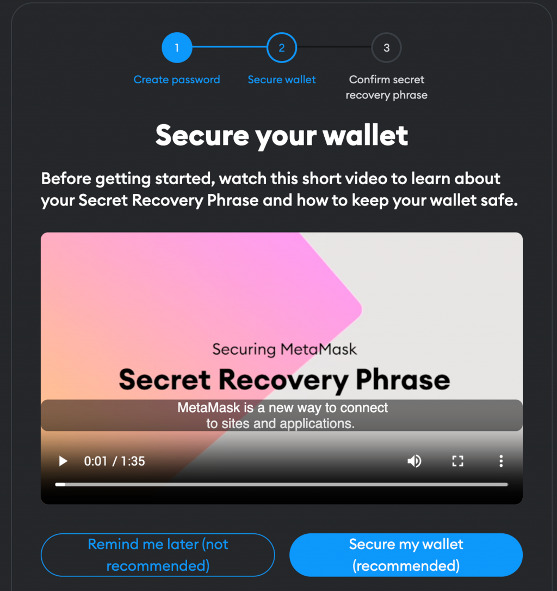
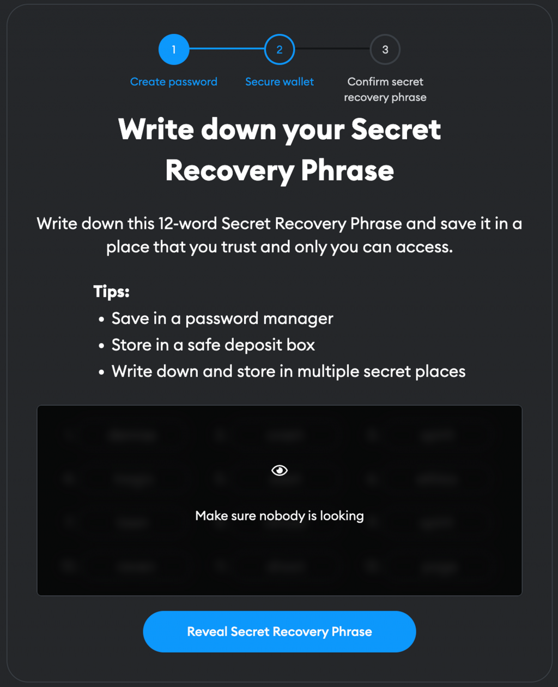
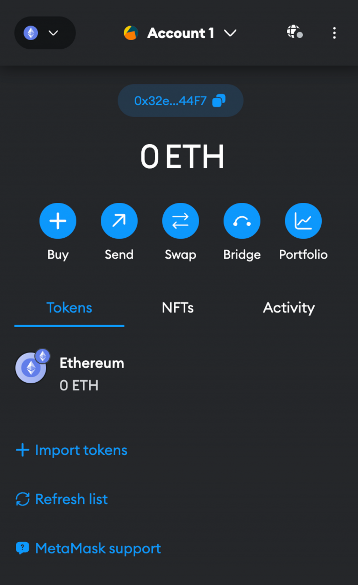

DAY 2｜Day 2 -
基礎：區塊鏈錢包
原文：https://ithelp.ithome.com.tw/articles/10316715
發佈時間：2023-09-11 00:31:46
章節內容
1. 未分章內容
今天的內容會帶大家實際安裝一個區塊鏈錢包，這會在後續的內容中使用，也簡單介紹區塊鏈錢包背後的運作原理，以及市面上有哪些不同種類的錢包。
MetaMask
是目前最受歡迎的區塊鏈錢包之一，我們馬上來安裝瀏覽器 Extension 版本的
Metamask：
前往 Metamask 官方下載頁面 ，找到你使用的瀏覽器進入
Extension 商店
以 Chrome 為例，按下 Add to Chrome 就可以了

https://ithelp.ithome.com.tw/upload/images/20230911/20162294ajj6NuiiNC.png
完成安裝後，會引導進行初次設定，如果還沒有用過 Metamask 的人就選擇
Create a new Wallet 即可

https://ithelp.ithome.com.tw/upload/images/20230911/20162294jsAWotlnvh.png
接下來他會要你輸入密碼，這個密碼是用來加密錢包私鑰的，如果洩露可能會導致資產被盜，所以盡量設定沒有在其他地方用過的長一點的密碼會比較好
接下來他會問你是否要備份「註記詞」，也就是 12 個字的英文單字，這
12
個單字就會對應到你錢包的私鑰，必須妥善記錄下來保存在安全的地方。

https://ithelp.ithome.com.tw/upload/images/20230911/20162294MGe7cBTAUq.png
在這個頁面把 12 個英文單字的註記詞紀錄下來

https://ithelp.ithome.com.tw/upload/images/20230911/20162294Srodsa5UVk.png
按照指示完成後續步驟後，就可以開始使用 MetaMask 錢包了。
打開 Metamask 後會看到像這樣的介面：

https://ithelp.ithome.com.tw/upload/images/20230911/20162294uDOqK37vav.png
左上角的按鈕可以切換不同的區塊鏈網路。預設是以太坊（Ethereum），點進去可以看到不同的區塊鏈（如
Linea，或是勾選 Test networks 後可以看到 Goerli、Sepolia 等等鏈）
在 Account
下方是你的錢包地址，他會是一串十六進制的文字，所以之後如果別人要把幣打給你，只要把這個地址給他就可以了
下面會顯示錢包的餘額、持有的代幣以及交易歷史。但因為是全新的錢包，所以還不會有任何代幣跟交易紀錄
4. 區塊鏈與私鑰
在創建完 Metamask
錢包後，來講解一下前面提到的許多專有名詞，以及到底什麼是區塊鏈錢包。
區塊鏈的本質其實就是一個帳本，紀錄著每個帳戶（也就是地址）上持有多少資產的資訊。比較特別的是這些資訊會被公開並備份到大量的電腦上（稱為區塊鏈的節點），透過密碼學的機制確保這個帳本是無法竄改的。
而我要怎麼從一個帳戶（地址）轉帳出去，就必須證明我擁有這個地址的使用權，這就是透過這個地址背後對應的一把「私鑰」，透過私鑰與一系列密碼學的計算產生「簽章」後廣播給全世界的人，別人就可以透過這個「簽章」來驗證這筆交易是否真的是由擁有私鑰的人簽名出來的。如果驗證通過，這筆轉帳的交易才會成立並被包含到區塊鏈的帳本中。因此掌握了私鑰就等於掌握了一個區塊鏈地址的所有資產。後續會提到更多關於區塊鏈背後的密碼學機制，這邊只要先學習初步的概念即可。
至於「註記詞」與「私鑰」的差別，私鑰的格式是長得像這樣的十六進制字串：
[code]
37d2a4f8651d1b46bfb42e5b1fe7f6e910342c2e7aa64d1c55e37d8a70df6e12
[/code]
至於註記詞則是長得像這樣的 12 個英文單字
[code] toe little globe cousin miss wink thank vibrant arrive any
clump hockey
[/code]
在其他錢包中可能會看到 24
個英文單字的版本，這兩者之間的關聯是私鑰可以從註記詞計算出來，因此兩者都有完整錢包的控制權，註記詞是讓人更方便抄寫、紀錄的格式。詳細的計算方式可以參考
BIP-32,
BIP-39, BIP-44 等標準的介紹
如果要了解更多關於區塊鏈的機制，推薦可以看 3Blue1Brown
影片的解說 ，裡面有更完整的解釋
5. 錢包的種類
所以區塊鏈錢包的本質就是一個管理私鑰的工具，並可以對使用者想執行的交易產生簽名，將其廣播到區塊鏈上。而錢包又有分幾個種類：
瀏覽器錢包
：許多錢包都可以透過瀏覽器的擴充套件進行安裝，這樣在操作去中心化應用（DApp）時可以輕易地連接錢包。當你按下連接錢包的按鈕，透過瀏覽器擴充套件就可以連接你已安裝的錢包。它們會把私鑰保存在瀏覽器擴充套件的
local storage
裡，透過一些安全措施確保私鑰和助記詞不會被破解或被其他應用取得。類似的錢包還有像
Rabby 、Coinbase Wallet 等等。手機 App 錢包 ：本質上跟瀏覽器錢包做的事情一樣，在
App 內管理使用者的私鑰、地址、資產以及交易紀錄。很多錢包商也會同時推出
App 錢包與瀏覽器錢包，讓使用者可以在所有平台都有一致的體驗。Metamask
錢包也有手機 App 的版本，類似的錢包還有像 Trust Wallet 、Rainbow 、KryptoGO 等等（我們也有瀏覽器錢包 ）。冷錢包
：冷錢包是一種更安全的私鑰保管方式。它是一個類似於 USB
的獨立的硬體裝置，當使用者想進行交易時，要把冷錢包裝置連接到電腦並執行交易，交易內容會被送到冷錢包硬體上讓使用者確認並計算簽章，完成後再送回電腦。過程中私鑰會保存在這個裝置裡並且不會與外部環境互動，也就是私鑰不會出現在電腦的記憶體或硬碟空間中，把私鑰外洩的風險降得更低，當然這樣也降低了一些方便性。代管錢包
：是比較新的一種錢包類型，他們雖然也提供去中心化的錢包地址，但私鑰其實是由第三方幫使用者管理。這種服務通常是可以讓使用者用社交帳號（Google、Facebook
等）登入，便可以直接操作這個錢包和查看資產，並且不用記任何註記詞或私鑰，但這種便利性帶來的代價是必須信任這間公司管理你的私鑰。類似的錢包有
Magic 和 Web3Auth
6. 小結
市面上許多區塊鏈錢包都各有不同的特色，對不同區塊鏈/代幣的支援度也不同，選擇是非常多樣的，大家也可以多下載不同的區塊鏈錢包體驗看看。明天我們會開始使用錢包操作測試鏈上的應用。